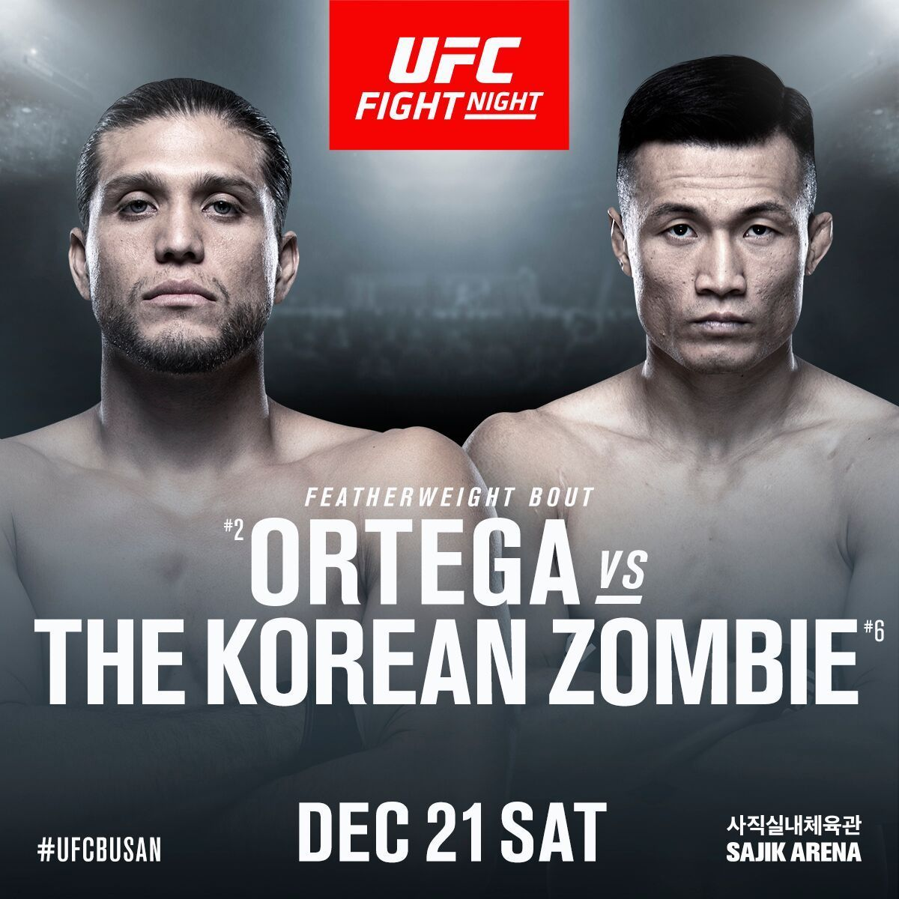

Now, many months later and with tensions between the two having escalated exponentially, they will finally clash in what could be a bout to determine the next title contender in the 145-pound weight class.
Saturday’s contest will be Ortega’s first appearance since his UFC 231 title fight loss to Max Holloway, where he was outworked and outgunned en route to suffering the first defeat of his career.
In addition to taking time to recover from various injuries, Ortega has used this hiatus to completely reshape his team, with Rener Gracie standing as the lone remaining member of his ensemble as he readies to return to the Octagon.